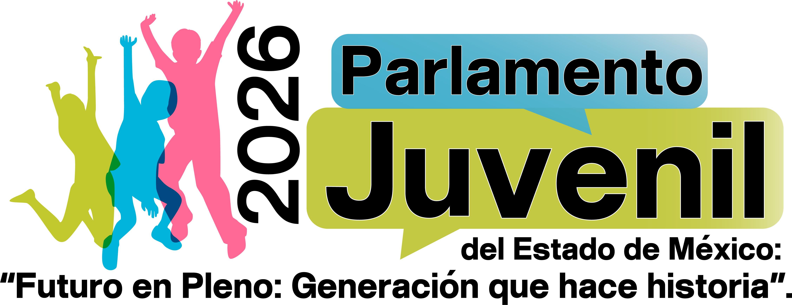

En el marco de la conmemoración del Día Internacional de la Juventud, la Comisión Legislativa de Juventud y el Deporte de la LXII Legislatura del Estado de México, con fundamento en las fracciones I, II, III, IV Y V del artículo 38 Quater de la Ley Orgánica del Poder Legislativo del Estado Libre y Soberano de México:
Convocatoria
A las personas jóvenes de entre 15 y 29 años de edad residentes en el Estado de México para participar en el Parlamento Juvenil 2026 del Estado de México: “Futuro en Pleno: Generación que hace historia”, espacio de diálogo democrático, de liberación y construcción de propuestas legislativas orientadas al desarrollo del Estado, conforme a las siguientes:
21 de agosto, 2026
Congreso del Estado de México, Toluca
15 a 29 años
Bases
1. Objetivo
Impulsar la participación efectiva de las juventudes en la vida pública mediante la elaboración, discusión y presentación de propuestas legislativas que contribuyan a resolver problemáticas sociales, económicas, ambientales, tecnológicas y culturales del Estado de México, fortaleciendo una ciudadanía participativa, innovadora y comprometida con el desarrollo sostenible.
2. SEDE Y FECHA
El evento se llevará a cabo el 21 de agosto de 2026 en el Recinto Legislativo del Congreso del Estado de México, ubicado en Plaza Hidalgo s/n, Colonia Centro, Toluca, Estado de México, C.P. 50000.
3. REQUISITOS
Ser originario del Estado de México o acreditar una residencia mínima de seis meses previos a la publicación de esta convocatoria:
-
Tener entre 15 y 29 años cumplidos al momento del registro.
-
En caso de personas jóvenes menores de edad, se deberá presentar una carta responsiva del padre o tutor responsable.
-
Exposición de motivos redactada en no más de una cuartilla, en Arial 12, interlineado sencillo, que represente la intención de desempeñarse como persona joven parlamentaria.
-
Presentar una propuesta legislativa de ley o decreto de acuerdo con las temáticas propuestas en la presente convocatoria.
4. REGISTRO
Podrán realizar su registro a partir de la publicación de la convocatoria y a más tardar hasta las 11:59 hrs. del 7 de agosto del año en curso en las siguientes modalidades:
1.
Registro en línea a través de la siguiente liga: forms.gle/MTGwVKdQiUT5Powp6
-
También podrás acceder al formulario a través de las redes sociales y del sitio web del Congreso del Estado https://www.congresoedomex.gob.mx/.
2.
Información documental
-
Breve semblanza. Documento de máximo una cuartilla, en el que se expongan los datos generales, intereses, trayectoria académica, social o comunitaria del o la aspirante.
-
Propuesta de Iniciativa de Ley. Elabora un documento con una iniciativa legislativa clara, viable y con una extensión máxima de tres cuartillas, en formato Arial 12, interlineado sencillo, enfocada en alguno de los siguientes ejes temáticos:
3.
Envío final de la documentación
-
Una vez reunido todo lo anterior, deberás enviar los siguientes elementos en formato PDF al correo institucional de la Comisión de la Juventud y el Deporte: juventudydeporteLXII@congresoedomex.gob.mx
-
Semblanza
-
Iniciativa de ley
EJES TEMÁTICOS
IA, derechos digitales y protección de datos personales.
Cambio climático y resiliencia urbana.
Movilidad sustentable y transporte inteligente.
Emprendimiento y economía creativa.
Gobierno digital y simplificación administrativa.
Participación ciudadana y juvenil.
Vivienda accesible para personas jóvenes.
Igualdad sustantiva y prevención de la violencia.
Empleo juvenil y trabajo del futuro.
Sistema de cuidados y juventudes.
Deporte, juventudes y desarrollo comunitario.
Agua, seguridad hídrica y gestión sustentable del recurso.
5. PROCESO DE SELECCIÓN
La evaluación estará a cargo de las y los diputados integrantes de la Comisión de la Juventud y el Deporte. Se seleccionarán a 75 personas parlamentarias jóvenes
-
Claridad en la exposición de ideas.
-
Capacidad de análisis y propuesta de soluciones.
-
Pertinencia, originalidad y motivación para participar.
Las personas seleccionadas deberán enviar al correo institucional los siguientes documentos en formato PDF:
Para mayores de edad:
-
Identificación oficial (INE, pasaporte u otra válida).
-
Comprobante de domicilio (no mayor a 3 meses).
-
Fotografía digital, a color, de frente y rostro descubierto.
Para menores de edad:
-
Acta de nacimiento.
-
Comprobante de domicilio (no mayor a 3 meses).
-
Fotografía digital, a color, de frente y rostro descubierto.
-
Identificación oficial del padre, madre o tutor.
-
Carta responsiva y Carta compromiso, debidamente llenadas y firmadas por su padre, madre o tutor. (Formatos que se enviarán adjuntos a la confirmación de ser seleccionada)
La distribución de las diputaciones en la Mesa Directiva y los Grupos Parlamentarios también se realizará bajo criterios de paridad de género, como medida afirmativa para asegurar la igualdad sustantiva entre mujeres y hombres en los espacios de representación juvenil.
6. PUBLICACIÓN DE RESULTADOS
Los resultados se darán a conocer el 11 de agosto del 2026 a través de la página oficial del Congreso del Estado de México y las redes sociales de las y los integrantes de la Comisión de la Juventud y el Deporte. Posteriormente, se enviará una carta de aceptación vía correo electrónico a las personas jóvenes seleccionadas.
7. TRATAMIENTO DE LOS DATOS PERSONALES
a) Cumplir con los requisitos de participación establecidos en esta convocatoria.
b) Generar el registro de postulaciones.
c) Asignar folios de identificación a las y los aspirantes.
d) Establecer comunicación con las personas participantes para el seguimiento del proceso, notificaciones o aclaraciones.
8. PREVISIONES DEL PARLAMENTO
Todo lo relativo a la convocatoria que no esté expresamente contemplado en la misma, será revisado por las personas parlamentarias que integran la Comisión legislativa de la Juventud y el Deporte.
FECHAS CLAVE
Cierre de registro
Publicación de resultados
Realización del parlamento juvenil
Datos personales y previsiones
Los datos recabados solo se usan para verificar requisitos, generar el registro, asignar folios y dar seguimiento al proceso.
Todo lo no contemplado expresamente en esta convocatoria será revisado por las personas parlamentarias que integran la comisión de juventud y el deporte.